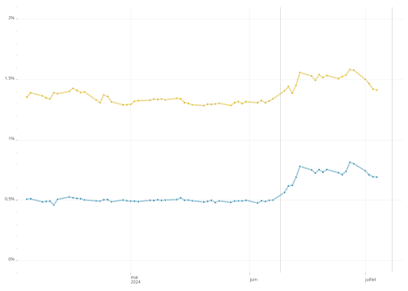

code
dates <- c(2023, 2024, 2025)
as.Date(as.character(dates), format = "%Y")[1] "2023-12-03" "2024-12-03" "2025-12-03"[1] "2023-01-01" "2024-01-01" "2025-01-01"[1] "2023-01-01" "2024-02-01" "2025-03-01"Règle 1 : On utilise
theme_ofce()pour les graphiques !
Règle 2 : Les dates sont au format
<date>même lorsque la fréquence est annuelle.
Règle 3 : On utilise
scale_x_date(date_breaks = "5 years", date_minor_breaks = "1 year", guide = "minor_ticks")en définissantdate_breaksà la fréquence souhaitée (en évitant trop de dates) etdate_minor_breaksà une année ("1 year").
Règle 4 : Si les y sont en %, alors mettre “%” dans le format de l’axe des y.
Règle 5 : On choisit un
line_widthentre 0.5 et 1 pour legeom_line(), on ajoute ungeom_point(shape=21, stroke=0.25, col="white")pour marquer les points auxquels on a des données. Si on peut mettre la légende sous forme de labels, c’est mieux car cela allège le graphique.
Pour les séries temporelles, il y a deux recommandations pour les données :
utilisez le format long pour les données du graphique. Il peut être plus simple pour calculer des taux de croissance ou des ratios de passer en format large, mais c’est mieux de passer en format long pour la partie graphique, avec une ou plusieurs colonnes pour différencier les lignes. Cela permettra d’associer une couleur à chaque série et une facette à chaque pays par exemple.
le champ décrivant les dates doit être en type date. ce n’est pas toujours évident quand les séries sont à fréquence annuelle, mais c’est très utile pour mélanger des séries de fréquence irrégulière, pour homogénéiser l’aspect des axes de dates et mieux maîtriser le formatage des dates. Pour convertir une date en date, soit elle est au format <character> sous la forme "2022-12-01" et la fonction base::as.Date() fonctionne très bien. Sinon, pour les autres cas, le package lubridate (formation R niv. 1) est très pratique et propose de nombreuses fonctions permettant d’absorber beaucoup de cas (les fonctions sont par exemple lubridate::ymd() lubridate::dmy() lubridate::my() etc…).
dates <- c(2023, 2024, 2025)
as.Date(as.character(dates), format = "%Y")[1] "2023-12-03" "2024-12-03" "2025-12-03"[1] "2023-01-01" "2024-01-01" "2025-01-01"[1] "2023-01-01" "2024-02-01" "2025-03-01"Note
Dans le cas où les données proviennent d’Excel et sont en format numérique on peut utiliser
as.Date(df$date, origin = "1899-12-30")pour les convertir en<date>.
Prenons l’exemple du graphiques sur les spreads (legislatives2024, Blot Geerolf Plane). Les données sont générées par un scrapping sur investing.com (en attendant une solution API sur une banque de données bien faite). Les données se présentent sous la forme.
spreads# A tibble: 10,117 × 3
date pays taux
<date> <chr> <dbl>
1 2007-01-02 spreadfra 0.0130
2 2007-01-03 spreadfra 0.0360
3 2007-01-04 spreadfra 0.0280
4 2007-01-05 spreadfra 0.0190
5 2007-01-08 spreadfra 0.0440
6 2007-01-09 spreadfra 0.0430
7 2007-01-10 spreadfra 0.0290
8 2007-01-11 spreadfra 0.0370
9 2007-01-12 spreadfra 0.0340
10 2007-01-15 spreadfra 0.0380
# ℹ 10,107 more rowsLes données sont au format long (avec deux modalités pour pays et donc 3 colonnes), les dates sont au format <date>, donc tout va presque bien. La colonne pays est un peu brute. On la transforme pour avoir un label plus propre et en facteur, pour contrôler l’ordre (on met France en premier, Italie en second). Il y a plusieurs méthodes pour arriver à ce résultat. Ici, on reste très simple parce qu’il n’y a que deux modalités. Si il y en avait plus de deux (et surtout un grand nombre, possiblement évolutif), on aurait fait quelques manipulations de chaînes et on aurait utilisé le package countrycode pour transformer les code pays en texte lisible, possiblement traduit dans différentes langues.
# A tibble: 10,117 × 3
date pays taux
<date> <chr> <dbl>
1 2007-01-02 spreadfra 0.0130
2 2007-01-03 spreadfra 0.0360
3 2007-01-04 spreadfra 0.0280
4 2007-01-05 spreadfra 0.0190
5 2007-01-08 spreadfra 0.0440
6 2007-01-09 spreadfra 0.0430
7 2007-01-10 spreadfra 0.0290
8 2007-01-11 spreadfra 0.0370
9 2007-01-12 spreadfra 0.0340
10 2007-01-15 spreadfra 0.0380
# ℹ 10,107 more rowsLe graphique de base est alors simple à construire. On utilise une couche geom_line() et geom_point(), une couche aes() avec comme x les dates, y les taux et couleurs les pays. Pour geom_line(), il faut préciser le groupe (cela peut paraître redondant, mais cela peut servir si on veut colorer en fonction d’une autre variable). L’ordre est important et le geom_line() est en premier et donc en dessous du geom_point().
library(ofce)
cc <- PrettyCols::prettycols("Summer", n=2)
date_maj <- "2024-07-01"
main <- ggplot(spreads_data) +
aes(x=date, y=taux, fill = pays, color=pays, group=pays) +
geom_line(linewidth = 0.75, alpha = 0.5, show.legend = FALSE) +
geom_point(stroke = 0.5, size = 1,
col = "white", shape = 21, show.legend = FALSE)+
scale_color_manual(
aesthetics = c("fill", "color"),
name = NULL, values = cc) +
theme_ofce()+
scale_ofce_date() +
guides(
y = guide_axis(minor.ticks = TRUE)) +
labs(
y="Ecart de taux à 10 ans",
x=NULL,
colour=NULL,
caption = glue::glue("*Source* : investing.com<br>Mis à jour : {date_maj}")) +
scale_y_continuous(
labels = ~str_c(.x, "%"),
minor_breaks = scales::breaks_width(0.1))
main |> add_logo()
On utilise la palette summer de PrettyCols (affaire de goût). On utilise la fonction theme_ofce() pour homogénéiser la présentation des graphiques. On précise les labels des axes inutile pour x, explicite pour y. Et la source, en notant que l’on peut utiliser markdown dans le texte de la source, ce qui permet de mettre Source en italique.
Le recours à scale_x_date() permet de spécifier facilement le format des dates (avec la syntaxe de base::strptime()) et la fonction scale::label_date_short() permet un formatage élégant des dates (voir plus bas la partie insert).
On ajoute au graphique des annotations. C’est ici faid de façon laborieuse, on peut construire des fonctions (formation R niv. 2) ou utiliser esquisse ou {gganotate} mais ces deux solutions ont des défauts.
Pour les annotations on peut utiliser différentes méthodes. La plus laborieuse est la fonction ggplot2::annotate(). La plus élégante est ggforce::geom_mark_circle() ou ggrepel::geom_repel_text().
# méthode 1 : annotate
annotations <- list(
annotate(
"text", x = as.Date("2013-12-01"), y= 1,
label="France" , color=cc[[1]] , size=3, fontface ="bold"),
annotate(
"text", x = as.Date("2010-06-01"), y= 3 ,
label="Italie" , color=cc[[2]], size=3, fontface ="bold"),
annotate(
"text",
x = as.Date("2009-12-01"),
y= 5 ,
label="Crise des dettes souveraines\n26 juillet 2012 : Mario Draghi \n 'Whatever it takes'" ,
color= "grey33",
size=2,
hjust=1),
annotate(
"segment",
x = as.Date("2010-03-01"),
xend = as.Date("2011-07-01"),
y = 5,
yend = 4.6,
colour = "grey33",
linewidth=0.25,
arrow= arrow(length = unit(4, "point"))),
annotate(
"text",
x = as.Date("2016-9-01"),
y= 4.5 ,
size = 2,
label="4 mars 2018 : Élections italiennes\n1er juin : gouvernement de coalition" ,
color= "grey33"),
annotate(
"segment",
x = as.Date("2016-09-01"),
xend = as.Date("2018-05-01"),
y = 4.2,
yend = 3,
colour = "grey33",
linewidth=0.25,
arrow=arrow(length = unit(4, "point"))),
annotate(
"text",
x = as.Date("2022-01-01"),
hjust = 1,
y= 0.8,
label="Annonce de la dissolution" ,
color= "grey33",
size=2),
annotate(
"segment",
x = as.Date("2022-03-01"),
xend = as.Date("2024-04-01"),
y = 0.8,
yend = 0.7,
colour = "grey33",
linewidth=0.25,
arrow= arrow(length = unit(4, "point"))))
(main + annotations) |> add_logo()
# méthode 2 : ggrepel
# on enrichit les données des labels,
# le code est plus compact et surtout plus facile à manier
# (pour modifier les annotations, on le fait dans les deux tribbles)
library(ggrepel)
events <- tribble(
~date, ~pays, ~event,
"2012-01-02", "Italie", "Crise des dettes souveraines\n26 juillet 2012 : Mario Draghi \n 'Whatever it takes'",
"2018-06-01", "Italie", "4 mars 2018 : Élections italiennes\n1er juin : gouvernement de coalition",
"2024-06-10", "France", "Annonce de la dissolution"
) |>
mutate(date = as.Date(date) |> floor_date("week", week_start = 1))
label_pays <- tribble(
~date, ~pays,
"2009-01-01", "Italie",
"2013-12-01", "France"
) |>
mutate(
date = as.Date(date),
date = floor_date(date, "week", week_start = 1),
label_pays = pays
)
ss <- spreads_data |>
left_join(events, by = c("date", "pays")) |>
left_join(label_pays, by = c("date", "pays")) |>
mutate(
label_pays = replace_na(label_pays, ""),
event = replace_na(event, "")
) |>
arrange(pays, date)
add_logo(main %+% ss) +
ggrepel::geom_text_repel(
aes(label = label_pays, color = pays),
fontface = "bold",
size = 3, show.legend = FALSE,
min.segment.length = Inf,
max.overlaps = Inf, hjust = 0.5
) +
ggrepel::geom_text_repel(
aes(label = event),
color = "black",
size = 2, show.legend = FALSE,
segment.size = 0.2, min.segment.length = 0.1,
max.overlaps = Inf, hjust = 0.5,
nudge_x = c(-500, -250, -250), nudge_y = c(-0.3, 1, -0.5),
arrow = arrow(length = unit(0.015, "npc"))
) +
scale_y_continuous(labels = ~ str_c(.x, "%"), limits = c(0, 6),
minor_breaks = scales::breaks_width(0.1),
guide = "axis_minor") +
scale_ofce_date(limits = c(as.Date("2008-01-01"), NA))
Le résultat est intéressant, mais le graphique a cependant un défaut, il y a trop de points, ce qui est du à la fréquence quotidienne et donc il perd en clarté. On va donc faire deux choses : réduire la fréquence en agrégeant les données par mois, puis on va ajouter un insert.
Pour construire les données à la fréquence mensuelle, on va créer un champ de date, mais retenant une seule date par mois (au milieu du mois). En agrégeant par mois (summarise) on construit la série en mensuel.
md <- max(spreads_data$date)
dates <- spreads_data$date
# on force le jour à être le 15 du mois, il n'y aura qu'une date par mois!
lubridate::day(dates) <- 15
spreads_m <- spreads_data |>
mutate( date = dates) |>
group_by(date, pays) |>
summarize(taux_max = max(taux, na.rm=TRUE),
taux_min = min(taux, na.rm=TRUE),
taux = mean(taux, na.rm=TRUE))
spreads_m# A tibble: 422 × 5
# Groups: date [211]
date pays taux_max taux_min taux
<date> <fct> <dbl> <dbl> <dbl>
1 2007-01-15 France 0.0580 0.0130 0.0409
2 2007-01-15 Italie 0.278 0.154 0.229
3 2007-02-15 France 0.0560 0.0380 0.0440
4 2007-02-15 Italie 0.284 0.17 0.211
5 2007-03-15 France 0.0630 0.0350 0.0466
6 2007-03-15 Italie 0.318 0.192 0.239
7 2007-04-15 France 0.0690 0.0410 0.0496
8 2007-04-15 Italie 0.285 0.153 0.225
9 2007-05-15 France 0.0980 0.0330 0.0464
10 2007-05-15 Italie 0.291 0.175 0.222
# ℹ 412 more rowsOn peut alors facilement modifier le graphique main en utilisant %+% (cette instruction modifie les données en entrée du graphique par le nouveau jeu de données qu’on vient de construire qui a exactement la même structure, comme on a utilisé les dates le passage du quotidien au mensuel se fait automatiquement, les axes sont parfaitement construits) :
L’insert est le même graphique, en enlevant les annotations, en simplifiant les axes et en zoomant sur les deux derniers mois.
inset <- main +
theme_ofce(
base_size = 7,
axis.line.x = element_blank(),
axis.line.y = element_blank(),
plot.background = element_rect(fill = "white")
) +
scale_ofce_date(
labels = scales::label_date_short(format = c("%Y", "%B")),
date_breaks = "1 month",
limits = c(md - months(3), NA)) +
geom_vline(
xintercept = as.Date("2024-06-09"),
linewidth = 0.1,
color = "grey50"
) +
geom_vline(
xintercept = as.Date("2024-07-08"),
linewidth = 0.1,
color = "grey50"
) +
scale_y_continuous(labels = ~ str_c(.x, "%"), limits = c(0, 2),
minor_breaks = scales::breaks_width(0.1),
guide = "axis_minor") +
labs(y = NULL, caption = NULL, color = NULL, fill = NULL)
inset
On l’insère dans le graphique principal en utilisant patchwork, ce qui donne le graphique, plus lisible et plus élégant. Les paramètres de inset sont choisis après quelques essais et erreurs. On a réduit la taille de la police de caractère pour accentuer l’effet visuel.
library(patchwork)
main_m <- add_logo((main + annotations) %+% spreads_m)
main_m + inset_element(inset, 0.75, 0.66, 1, 1)Tip 1: Une alternative avec {ggmagnify}
Le package ggmagnify simplifie la tâche et offre quelques améliorations esthétiques. Il faut cependant que les dataset principal et inset soit les mêmes [pas sûr en fait]. On reprend l’agrégation temporelle en l’arrêtant aux deux derniers mois. On complexifie l’insert pour intégrer plus d’éléments en utilisant l’argument
plotdeggmagnify::geom_magnify().code
# pak::pak("hughjonesd/ggmagnify") library(ggmagnify) md <- max(spreads_data$date) date_inset <- floor_date(md - months(3), unit = "month") spreads_hyb <- spreads_data |> mutate( date_h = floor_date(date, unit = "month"), date_h = if_else(date < date_inset, date_h, date) ) |> group_by(date_h, pays) |> summarize( taux = mean(taux, na.rm = TRUE), n = n(), .groups = "drop" ) |> rename( date = date_h ) |> mutate( date_label = ifelse(n > 1, stamp( orders = "%B %Y", locale = "fr_FR.utf8", exact = TRUE, quiet = TRUE )(date), stamp("22/12/2024", orders = "%d/%m/%Y", locale = "fr_FR.utf8", quiet = TRUE )(date) ), tooltip = str_c( "<b>", pays, "</b><br>", date_label, "<br>Ecart de taux avec l'Allemagne : ", f_taux(taux) ), )Error in `mutate()`: ℹ In argument: `tooltip = str_c(...)`. Caused by error in `f_taux()`: ! could not find function "f_taux"code
inset_plot <- ggplot(spreads_hyb) + aes(x = date, y = taux, fill = pays, color = pays, group = pays) + geom_line(linewidth = 0.75, alpha = 0.5, show.legend = FALSE) + geom_point_interactive( aes(tooltip = tooltip, data_id = date), stroke = 0.5, size = 1, col = "white", shape = 21, show.legend = FALSE ) + scale_color_manual( aesthetics = c("fill", "color"), name = NULL, values = cc ) + theme_ofce( base_size = 7, panel.grid.major.y = element_line(color = "gray", linewidth = 0.25), axis.line = element_blank() ) + geom_vline(xintercept = as.Date("2024-6-30"), linewidth = 0.25, color = "grey") + labs( y = NULL, x = NULL, colour = NULL, caption = NULL ) + scale_x_date( labels = scales::label_date_short(format = c("%Y", "%B")), date_breaks = "1 month" ) + scale_y_continuous( labels = ~ str_c(.x, "%"), breaks = seq(0, 2))Error: object 'spreads_hyb' not foundcode
from <- list(md - days(50), md, 0, 2) to <- list(md - years(4), md + years(1), 3.75, 5) sh <- ggplot(spreads_hyb) + aes(x = date, y = taux, fill = pays, color = pays, group = pays) + geom_line(linewidth = 0.75, alpha = 0.5, show.legend = FALSE) + geom_point_interactive( aes(tooltip = tooltip, data_id = date), stroke = 0.5, size = 1, col = "white", shape = 21, show.legend = FALSE ) + scale_color_manual( aesthetics = c("fill", "color"), name = NULL, values = cc ) + theme_ofce(plot.margin = ggplot2::margin(10, 60, 10, 10)) + guides( x = guide_axis(minor.ticks = TRUE), y = guide_axis(minor.ticks = TRUE) ) + labs( y = "Ecart de taux à 10 ans", x = NULL, colour = NULL, caption = glue::glue("*Source* : investing.com<br>Mis à jour : {date_maj}") ) + scale_ofce_date( labels = scales::label_date_short(format = c("%Y")) ) + scale_y_continuous( labels = ~ str_c(.x, "%"), breaks = seq(0, 5), minor_breaks = scales::breaks_width(0.1), guide = "axis_minor", expand = expansion(), limits = c(-0.25, NA), ) + annotations + coord_cartesian(clip = "off") + ggmagnify::geom_magnify( from = from, to = to, linewidth = 0.1, colour = "grey25", shadow = TRUE, plot = inset_plot, axes = "xy", shadow.args = list(sigma = 5, colour = "grey80", x_offset = 5, y_offset = 5) )Error: object 'spreads_hyb' not foundError: object 'sh' not found
La dernière étape est l’interactivité. On utilise le package ggiraph qui va permettre d’intégrer des tooltips très simplement et très efficacement. On peut aussi avec des sélections dynamiques ou encore des zooms.
Pour ajouter l’interactivité, la première étape est de générer le texte des tooltips dans le tableau de données. Notez l’utilisation de lubridate::stamp_date() pour formater les dates simplement.
Error in `mutate()`:
ℹ In argument: `tooltip = str_c(...)`.
ℹ In group 1: `date = 2007-01-15`.
Caused by error in `f_taux()`:
! could not find function "f_taux"L’interactivité est alors ajoutée par des instructions spécifiques qui se substituent aux geom_* en ajoutant un suffix, geom_*_interactive. Ces geom_*_interactive acceptent un aes avec deux paramètres supplémentaire, le premier définissant le tooltip et le second, data_id, une variable qui relie les éléments graphiques entre eux pour qu’ils soient modifiés lors du survol avec la souris. La fonction girafy qui est définie par source("rinit.r") et finalise le rendu. ggiraph conserve tous les éléments du graphique et il est possible de l’appliquer avec patchwork pour combiner les interactivités.
library(ggiraph)
main_i <- ggplot(spreads_m) +
aes(x = date, y = taux, color = pays, group = pays, fill = pays) +
geom_line(linewidth = 0.75, alpha = 0.5, show.legend = FALSE) +
geom_point_interactive(aes(tooltip = tooltip, data_id = date),
stroke = 0.5, size = 1, col = "white", shape = 21,
hover_nearest = TRUE, show.legend = FALSE
) +
scale_color_manual(name = NULL, values = cc, aesthetics = c("fill", "color")) +
labs(
y = "Ecart de taux à 10 ans",
x = NULL,
caption = "Source: investing.com"
) +
theme_ofce() +
guides(
y = guide_axis(minor.ticks = TRUE)
) +
labs(
colour = NULL,
caption = glue::glue("*Source* : investing.com<br>Mis à jour : {date_maj}")
) +
scale_ofce_date(
labels = scales::label_date_short(format = c("%Y", "%B")) ) +
scale_y_continuous(labels = ~ str_c(.x, "%"))
spreads_data <- spreads_data |>
mutate(
tooltip = str_c(
"<b>", pays, "</b><br>",
stamp_date("24/7/2024", locale = "fr_FR.utf8", quiet = TRUE)(date),
"<br>Ecart de taux avec l'Allemagne : ", f_taux(taux)
)
)Error in `mutate()`:
ℹ In argument: `tooltip = str_c(...)`.
Caused by error in `f_taux()`:
! could not find function "f_taux"
inset_i <- (main_i %+% spreads_data) +
theme_ofce(
base_size = 7,
axis.line.x = element_blank(),
axis.line.y = element_blank(),
plot.background = element_rect(fill = "white")
) +
scale_x_date(
labels = scales::label_date_short(format = c("%Y", "%B")),
date_breaks = "1 month",
date_minor_breaks = "1 week",
limits = c(md - months(2), NA),
guide = "minor_ticks"
) +
geom_vline(
xintercept = as.Date("2024-06-09"),
linewidth = 0.1,
color = "grey50"
) +
scale_y_continuous(labels = ~ str_c(.x, "%"),
limits = c(0, 2),
minor_breaks = scales::breaks_width(0.1),
guide = "axis_minor") +
labs(y = NULL, caption = NULL, color = NULL, fill = NULL)
main_i <- ((main_i + annotations) %+% spreads_m) |> add_logo()
main_i <- main_i + inset_element(inset_i, 0.75, 0.66, 1, 1)
girafy(main_i, r = 2.5)Error:
! Problem while computing aesthetics.
ℹ Error occurred in the 2nd layer.
Caused by error:
! object 'tooltip' not foundLa clef pour l’interactivité est d’apporter de l’information à l’utilisateur par le texte du tooltip. Il est possible d’avoir des interactivités plus avancées, en déclenchant une action sur un click par exemple. L’approche par ggiraph est applicable simplement à de nombreux graphiques avec un rendu satisfaisant. Cela marche également pour des facet et donc ça ouvre beaucoup de possibilités.
On transforme les données en fréquence trimestrielle en utilisant la fonction lubridate::floor_date(). En calculant les variables année (y) et trimestre (q), on peut avec le package ggh4x produire facilement un joli graphique trimestriel. Les clefs sont de mettre en x l’interaction entre ces deux éléments discrets (attention à l’ordre, attention à trier les données avec arrange). La magie opère ensuite avec guide = "axis_nested". Cete fonction est généralisable à bien des cas.
library(lubridate)
# pak::pak("teunbrand/ggh4x")
library(ggh4x)
spreads_q <- spreads_data |>
mutate(
y = lubridate::year(date),
q = str_c("T", lubridate::quarter(date)),
date_q = lubridate::floor_date(date, unit = "quarter")
) |>
group_by(date_q, y, q, pays) |>
summarize(
taux_max = max(taux, na.rm = TRUE),
taux_min = min(taux, na.rm = TRUE),
taux = mean(taux, na.rm = TRUE), .groups = "drop"
) |>
rename(date = date_q) |>
arrange(date) |>
filter(date >= "2018-01-01")
(ggplot(spreads_q) +
aes(x = interaction(q, y), y = taux, fill = pays, color = pays, group = pays) +
geom_line(linewidth = 0.75, alpha = 0.5, show.legend = FALSE) +
geom_point(
stroke = 0.5, size = 1,
col = "white", shape = 21, show.legend = FALSE
) +
scale_color_manual(
aesthetics = c("fill", "color"),
name = NULL, values = cc
) +
theme_ofce(
axis.text.x = element_text(size = rel(0.8), margin = margin(t = 6)),
ggh4x.axis.nesttext.x = element_text(size = rel(1.2), margin = margin(t = 3))
) +
labs(
y = "Ecart de taux à 10 ans",
x = NULL,
colour = NULL,
caption = glue::glue("*Source* : investing.com<br>Mis à jour : {date_maj}")
) +
scale_y_continuous(labels = ~ str_c(.x, "%"),
minor_breaks = scales::breaks_width(0.1),
guide = "axis_minor") +
scale_x_discrete(guide = "axis_nested")) |> add_logo()Non mais ca va pas ?
Une bonne pratique est de mettre à disposition les données et le code ayant servi à produire le graphique. Une façon est d’utiliser les boutons code présents dans ce document pour publier le code. La seconde est de mettre tous les codes sur un dépôt github 😸 public.
A minima, on ajoute un bouton pour télécharger les données. C’est simple à faire avec downloadthis et ce bout de code qui peut être mis juste après un graphique. On reprend le fichier de données, tel quel, modifié éventuellement pour enlever ou renommer une colonne, et qui sera disponible en csv, UTF8, avec des virgules comme sépérateurs et des points comme marque décimale (i.e. pas ce qu’Excel attend ☠️).
Pour que les boutons soient sur la même ligne on utilise la syntaxe inline 'r une_expression_R' :
library(downloadthis)
b1 <- download_this(
spreads_m |> select(-tooltip),
icon = "fa fa-download",
class = "dbtn",
button_label = "Taux mensuels",
output_name = "taux_mensuels"
)Error in `select()`:
! Can't select columns that don't exist.
✖ Column `tooltip` doesn't exist.
b2 <- download_this(
spreads_data,
icon = "fa fa-download",
class = "dbtn",
button_label = "Taux quotidiens",
output_name = "taux_quotidiens"
)On peut aussi les mettre dans la marge en entourant le chunk R de ::: column-margin ⏎ un_code_r ⏎ ::: (visuellement c’est mieux quand il y a le graphique juste avant le div).